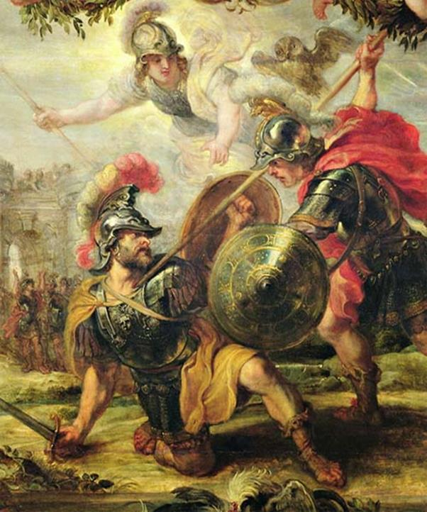
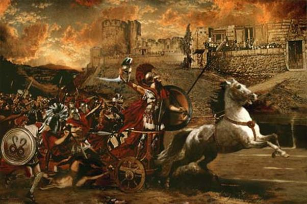

Lão vương Priam đứng trên bờ thành cao là người đầu tiên trông thấy Achille chạy từ ngoài cánh đồng tới. Cụ rất đỗi lo sợ. Cụ van xin con trai cụ từ bỏ cuộc chiến đấu, lẫn trốn vào thành, nhưng Hector vẫn đứng trước cổng thành chờ Achille tới.
Mẹ Hector, lão bà Hécube đứng trên bờ thành cao nước mắt lã chã tuôn rơi, khóc than thảm thiết. Cụ gọi con trở vào trong thành, đừng đối mặt đương đầu với Achille, nhưng tất cả những lời van xin của cha mẹ dù có thiết tha và xót xa đến mấy chăng nữa lúc này cũng không lay chuyển được Hector. Chàng suy nghĩ hết mọi đường mọi nẻo. Nếu chàng rút vào trong thành thì chàng sẽ bị Polydamas oán trách vì chính Polydamas đã từng khuyên chàng khi thấy Achille xuất trận, cho quân sĩ lui về giữ thành. Chàng đã bác bỏ kế thu quân cố thủ ấy. Vậy thì giờ đây tốt hơn hết là chấp nhận cuộc giao tranh, hoặc là lập được chiến công lừng lẫy hoặc là chết vinh quang trước cổng thành. Lại một ý nghĩ khác đến với Hector: hay là hòa giải với Achille, trả lại nàng Hélène cho Ménélas cùng với những của cải mà Paris đã lấy mang về thành Troie. Có thể để quân Hy Lạp từ bỏ cuộc vây đánh thành Troie ta phải hứa chia cả cho quân Hy Lạp một số của cải cất giữ trong kho? Nghĩ đi rồi nghĩ lại, Hector thấy rằng giờ đây không phải là lúc đưa ra những lời hòa giải, thương lượng với Achille. Achille không phải là một con người có trái tim khiêm nhường và nhân hậu. Tốt hơn hết là chấp nhận cuộc giao tranh. Các vị thần trên đỉnh Olympe là những người quyết định thắng bại trong cuộc đọ sức. Hector yên lặng đợi chờ và suy nghĩ như vậy. Trong khi đó Achille từ xa chạy như bay tới. Trông thấy Achille khí thế hung hăng, lao đồng giương cao nhăm nhăm, áo giáp mũ trụ sáng chói. Hector hoảng sợ bỏ chạy. Người con của Pélée liền đuổi theo. Achille đuổi với quyết tâm bắt Hector phải chấp nhận cuộc tử chiến phục thù. Cuộc đuổi bắt diễn ra quanh chân thành Troie. Một vòng, hai vòng, rồi ba vòng. Tất cả các vị thần trên đỉnh Olympe đều theo dõi cuộc đuổi bắt và nhìn thấy rõ hai dũng sĩ đang chạy dưới chân thành Troie. Zeus, vị thần phụ vương của những vị thần và những người trần thế đoản mệnh, tỏ ý thương xót cho số phận của Hector vì Hector là người đã từng dâng cúng Zeus biết bao lễ hiến tế trọng thể hậu hĩ. Zeus bèn lên tiếng hỏi các chư thần xem nên cứu Hector hay để cho Hector bị Achille giết chết. Zeus vừa hỏi xong thì nữ thần Athéna đứng dậy phản bác lại. Nữ thần nói cho Zeus biết số phận Hector đã được định đoạt. Các thần không ai là người có ý định cứu Hector. Bị Athéna chống lại, thần Zeus đành từ bỏ ý định của mình và rộng lượng cho phép Athéna được tùy nghi hành động. Thế là Athéna băng mình rời khỏi đỉnh Olympe xuống trần.
Hector vẫn bị Achille đuổi gấp. Mỗi lần Hector chạy về phía cổng thành để lao thẳng tới chân thành, hy vọng trên thành cao sẽ bắn tên xuống để bảo vệ mình thì Achille đều đoán biết được, bức chàng phải chạy tạt ra cánh đồng. Bao giờ Achille cũng chạy sát thành hơn cả. Thần Apollon đến phù trợ Hector lần cuối cùng. Thần kích thích lòng hăng hái và đôi chân nhanh nhẹn của Hector. Còn Achille, chàng lắc đầu ra hiệu cho quân Achéens không được bắn tên vào Hector. Chàng không muốn vinh quang đánh bại Hector trả thù cho Patrocle thuộc về người khác.
Khi hai dũng sĩ kẻ đuổi người chạy quanh thành Troie đến vòng thứ tư thì thần Zeus đem ra một cái cân vàng. Người đặt lên đĩa cân hai “Số mệnh” tượng trưng cho cái chết, bắt con người nhắm mắt xuôi tay: một của Achille có đôi chân nhanh, một của Hector luyện thuần chiến mã. Người cầm chính giữa cán cân nhấc lên. Thế là Hector phải từ giã thế giới vui tươi về sống dưới vương quốc tối tăm rầu rĩ của thần Hadès, và thần Apollon dù có yêu mến Hector chăng nữa cũng không thể cứu chàng thoát khỏi quyết định của Số mệnh. Thần phải bỏ Hector. Chính vào lúc ấy nữ thần Athéna mắt sáng long lanh đến bên người con của Pélée nói:
- Hỡi Achille danh tiếng lẫy lừng được Zeus yêu thương! Dù Hector có khí phách kiên cường quyết lòng tử chiến với nhà ngươi thì hắn cũng không thể giành được chiến thắng. Vì Số mệnh đã bắt hắn phải chết. Giờ đây là lúc ta và nhà ngươi có thể bắt hắn phải ngã gục dưới mũi lao để mang lại vinh quang bất diệt cho chúng ta. Vậy nhà ngươi hãy dừng lại nghỉ ngơi đi. Còn ta, ta sẽ đến gặp hắn để thuyết phục hắn chấp nhận cuộc giao đấu với ngươi.
Nữ thần Athéna nói vậy và Achille mừng rỡ tuân theo. Để dụ Hector quay lại đương đầu với Achille, nữ thần Athéna biến mình thành một chàng trai giống hệt em ruột của Hector là Déiphobe, và chàng Déiphobe đó đến khích lệ anh đừng chạy nữa kẻo hổ danh chiến sĩ. Chàng nói:
- Hỡi Hector không thể chê trách được! Thôi anh đừng chạy nữa! Hãy dừng lại, dừng lại và quyết một phen sống mái với Achille đi!
Hector đáp lại lời em:
- Déiphobe em hỡi! Trong số anh em do Priam và Hécube sinh ra thì em vốn là người được anh yêu mến hơn cả, nhưng hôm nay anh lại càng mến yêu em hơn, quý trọng em hơn vì trong lúc những người khác đều ở cả trong thành mà riêng em thấy anh ở trong vòng nguy hiểm em đã xông ra khỏi thành đến cứu nguy cho anh.
Hector trả lời như thế, còn nữ thần Athéna dưới dạng hình của Déiphobe lại càng khích lệ thêm lòng dũng cảm của Hector để Hector quyết đấu với Achille. Nữ thần lại còn mưu mẹo xông lên trước để Hector tiến bước theo, và bây giờ thì Hector và Achille đang tiến đến mặt đối mặt nhau để đọ sức.
Hector lên tiếng trước:
- Hỡi con của Pélée! Trước đây ta đã chạy quanh đô thành của Priam không dám chờ ngươi tới để giao đấu nhưng bây giờ thì ta không chạy trốn nữa. Ta quyết giao chiến với ngươi. Có thể ta thắng ngươi, mà cũng có thể ta bị ngươi đánh bại. Vậy thì tại đây ta và ngươi hãy cầu xin thần linh chứng giám vì đó là những người làm chứng tốt hơn hết. Nếu Zeus cho ta thắng ngươi thì ta sẽ không phanh thây ngươi đâu. Sau khi lột lấy những vũ khí lừng danh của ngươi, ta sẽ trả xác ngươi lại cho quân Achéens. Còn ngươi, ngươi cũng nên làm như vậy.
Achille quắc mắt nhìn Hector và nói:
- Này, này tên Hector đáng ghét kia! Ngươi đừng có mà nói chuyện giao ước với ta. Giữa ta và ngươi không thể nào có tình nghĩa bạn bè cũng không thể nào có một lời thề nguyền trước khi một trong hai người ngã xuống đem máu mình dâng cho thần Chiến tranh-Arès giải khát. Ngươi hãy trổ hết tài nghệ ra đi. Hôm nay hơn bao giờ hết, ngươi cần phải tỏ ra là một chiến sĩ can trường, một dũng tướng kiệt xuất. Ngươi không còn lối thoát nữa đâu. Giờ đây, nữ thần Athéna sẽ dùng ngọn lao của ta để trừng trị ngươi. Giờ đây là lúc ngươi phải đền mạng cho tất cả các chiến hữu của ta đã ngã xuống vì tay ngươi.
Achille nói vậy và phóng lao. Hector danh tiếng lẫy lừng trông thấy liền cúi mình tránh được. Cây lao đồng bay lướt qua người chàng rồi cắm phập xuống đất, nhưng nữ thần Athéna lại nhổ nó lên và đưa lại cho Achille mà Hector không biết.
Hector đánh trả, phóng mạnh ngọn lao đồng. Lao đâm vào giữa khiên của Achille nhưng không xuyên thủng được mà lại bật ra ngoài. Thấy mất lao mà không hạ được địch thủ, Hector vô cùng tức giận. Chàng thét gọi Déiphobe đem lại cho chàng một ngọn lao nhưng Déiphobe không còn ở bên chàng nữa. Hector biết rằng số phận mình đã bị thần linh định đoạt, nữ thần Athéna đã bày mưu lừa chàng. Song chàng bình tĩnh suy nghĩ: cần phải chọn một cái chết xứng đáng, bảo toàn dũng khí như một chiến công oanh liệt.

Hector rút gươm ra xông đến Achille. Achille không chĩa lao và giơ khiên ra trước để che chắn. Hai dũng sĩ gườm gườm nhìn nhau giữ thế mặt đối mặt nhau. Chính trong lúc ấy, Achille tìm được một chỗ sơ hở ở cổ họng Hector, và khi Hector vừa vung gươm lao tới thì Achille kịp thời thọc mạnh mũi lao nhọn vào nơi sơ hở ấy. Hector ngã bật ngửa người ra nằm phơi mình trên mặt đất. Máu chảy ồng ộc. Achille reo lên khoái chí:
- Thế là ngươi đã bị ta đánh gục. Bây giờ hẳn ngươi biết rằng Patrocle chết nhưng không phải không còn ai đánh thắng được ngươi để rửa hận, trả thù. Thôi ngươi nằm đấy mà chết đi, thi hài ngươi sẽ là mồi ngon cho muông thú.
Hector lúc này đã kiệt sức. Chàng đáp lại lời Achille rất khó khăn và nặng nhọc. Chàng xin Achille cho gia đình chàng đem của cải đến chuộc lại thi hài của chàng để làm lễ hỏa táng, nhưng Achille còn lăng nhục Hector và tuyên bố quyết phơi thây phơi xác Hector trên cát bụi để cho chim chóc rỉa rói, muông thú tha lôi. Và Hector đã chết, linh hồn chàng rời bỏ vĩnh viễn hình hài và ra đi trong nỗi đau đớn khôn xiết như vậy. Thấy Hector nằm bất động trên cát bụi, những chiến binh Hy Lạp kéo nhau đến xem và không một người nào là không lăng nhục chàng, cầm lao hay cầm kiếm đâm tiếp vào thi thể chàng một nhát, nhưng chưa hết, Achille còn nghĩ ra một cách đối xử với Hector vô cùng tàn bạo. Chàng chọc thủng gót chân Hector lấy dây xâu vào và buộc vào sau chiến xa. Thế rồi chàng lên xe quất ngựa cho xe chạy. Thi hài Hector bị kéo lê dưới đất nằm trong cát bụi bẩn thỉu. Đứng lên bờ thành cao, lão tướng Priam và Hécube trông thấy thi hài của đứa con yêu quý của mình bị hành hạ, bêu nhục tưởng chừng như đứt từng khúc ruột. Lão vương khóc nấc lên từng cơn còn Hécube gào khóc đến như điên dại. Nàng Andromaque, vợ của Hector lúc này vẫn chưa hay biết. Nàng ở trong tòa nhà cao của mình dệt vải và nhắc nhở các nữ tì đun nước để khi Hector từ chiến trường trở về có nước nóng tắm. Nghe tiếng khóc từ bờ thành cao vẳng đến, nàng choáng váng cả người. Nàng linh cảm thấy có chuyện chẳng lành đã xảy ra với chồng mình. Nàng vội chạy bổ ra ngoài bờ thành cao. Một cảnh tượng vô cùng đau thương thê thảm diễn ra trước mắt nàng: thi hài chồng nàng đang bị những con ngựa kéo lê trên cát bụi diễu qua trước thành để đi về doanh trại quân Hy Lạp. Nàng ngã vật ra ngất đi. Xung quanh nàng những người nữ tì và các chị em nàng xúm lại vực nàng dậy trong tiếng khóc than ai oán.

Achille kéo xác Hector quanh thành Tơroa
Achille kéo xác Hector quanh thành Troie rồi trở về doanh trại nơi có những chiến thuyền thon nhẹ nằm dài trên bờ biển trắng xóa cát. Khi lòng căm thù đã lắng xuống, chàng nhớ lại người bạn chí thiết của mình là Patrocle, người bạn đã chung nếm đắng cay, chia sẻ ngọt bùi với chàng qua bao gian nguy thử thách. Nhớ đến bạn nước mắt lại tuôn trào. Nỗi xót thương làm chàng trằn trọc thâu đêm không sao chợp mắt được.
Và rồi sau những cơn buồn nỗi nhớ như vậy, Achille lại thắng ngựa vào chiến xa và đánh xe kéo xác Hector quanh nơi đặt thi hài Patrocle. Ba lần xe chạy quanh thi hài Patrocle là ba lần xác Hector vật vã trong cát bụi. Thần Apollon xót thương người anh hùng xấu số và căm giận Achille, thần đã bằng phép lạ của mình làm cho da thịt người anh hùng không bị thối rữa, không bị rách nát. Thần đã đem chiếc khiên vàng của mình ra che chở cho thi hài của Hector khi Achille đánh xe kéo lê xác người anh hùng trên mặt đất đen.